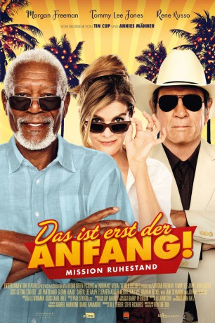

#9737 Das Ist erst der Anfang
Alternativ: Just Getting Started
 
 IMDB-Wertung: 4.3 / 10
IMDB-Wertung: 4.3 / 10  Metascore: 21
Metascore: 21 
Duke Diver ist der Manager des luxuriösen Altenwohnheims Villa Capri. Der Mann mit einer mysteriösen Vergangenheit sorgt dafür, dass die älteren Herrschaften eine Party nach der anderen feiern können – vor allem unter den Damen ist Duke ein King. Als Leo eincheckt, beginnt ein Hahnenkampf, der auch um die neue Bewohnerin Suzie ausgefochten wird. Dann aber wird Duke von seiner Vergangenheit eingeholt und die zwei Männer müssen sich zusammenraufen, um einen Angriff der Mafia abzuwehren.
Jahr: 2017
Dauer: 93 Minuten
FSK: 6
Land: USA Studio: Broad Green PicturesTonspuren: DTS - ,
Untertitel: Deutsch,
Auflösung: 1080p (1920x800) Größe: 8222 MB
Genre: Action, Komödie
Regisseur:  Ron Shelton
Ron Shelton
Drehbuch: Ron Shelton
Soundtrack: Alex Wurman
Darsteller:
 Morgan Freeman als Duke
Morgan Freeman als Duke Tommy Lee Jones als Leo
Tommy Lee Jones als Leo Rene Russo als Suzie
Rene Russo als Suzie Joe Pantoliano als Joe
Joe Pantoliano als Joe Glenne Headly als Marguerite
Glenne Headly als Marguerite- Sheryl Lee Ralph als Roberta
 Elizabeth Ashley als Lily
Elizabeth Ashley als Lily- George Wallace als Larry
 Graham Beckel als Burt
Graham Beckel als Burt Mel Raido als Oscar
Mel Raido als Oscar Jane Seymour als Delilah
Jane Seymour als Delilah- Johnny Mathis als Johnny Mathis
- Nick Peine als Jimmy
 Kristen DeVore Rakes als Ginger
Kristen DeVore Rakes als Ginger- Eli Goodman als Corporate Santa
- Dave Colon als Salvation Army Santa
- Tasos Hernandez als Melvyn's Valet
- Kat Sawyer als Woman Lecturer
 Vic Browder als Tony
Vic Browder als Tony- Jesse Phillips als Good Looking Guy
- Oscar Avila als Arturo
- Whit Washing als Elf Valet
- Tim Aydelott als Christmas Party Goer (uncredited)
- Joleen Baughman als Horse Wrangler (uncredited)
- Harona Ceesay als Bouncer (uncredited)
- Susan Conklin als Nina (uncredited)
 Rachel de la Torre als Christmas Party Dancer (uncredited)
Rachel de la Torre als Christmas Party Dancer (uncredited)- Rob Estrada als Partygoer (uncredited)
- Sharon Anne Henderson als Hipster (uncredited)
- Ramona King als Twila (uncredited)
 Alma Sisneros als Kimmy (uncredited)
Alma Sisneros als Kimmy (uncredited) Johnny Sneed als Agent King (uncredited)
Johnny Sneed als Agent King (uncredited)- Cheo Tapia als Elf (uncredited)
 Lynnanne Zager als GPS, Hotel Intercom (uncredited)
Lynnanne Zager als GPS, Hotel Intercom (uncredited)- Teddy Eggleston als Woman with Walker
- Nina Michaels als Female Caroler #1
- Connie Atkinson als Female Caroler #2
- James Michaels als Male Caroler #1
- Willie Johns Sr. als Male Caroler #2
- Boots Southerland als Tow Truck Driver
- Forrie J. Smith als Animal Farm Manager
- Drago Sumonja als Patel the Hotel Manager
- Martin Edward Andazola als New Year's Eve Party Goer (uncredited)
- Richard Garcia als Christmas Party Goer (uncredited)
- Evan Bryn Graves als Exotic Dancer (uncredited)
- Sylvie Grontis Hagan als Cougar (uncredited)
- Justin D. Moore als Christmas Banquet Attendee (uncredited)
- Victoria L. Moya als Dancer (uncredited)
- Kyle Pierson als Christmas Party Goer (uncredited)
- David White als Villa Capri Staff (uncredited)
Datei: X:\2018(G-M)\Ist erst der Anfang, Das (2017, FSK6, 1920x800).mkv seit 23.10.2018
Festplatte: HD 2018(G-Z)-2019(A-Z)
 Es gibt insgesamt 138 Filme in der Gruppe '2018(G-M)'
Es gibt insgesamt 138 Filme in der Gruppe '2018(G-M)'